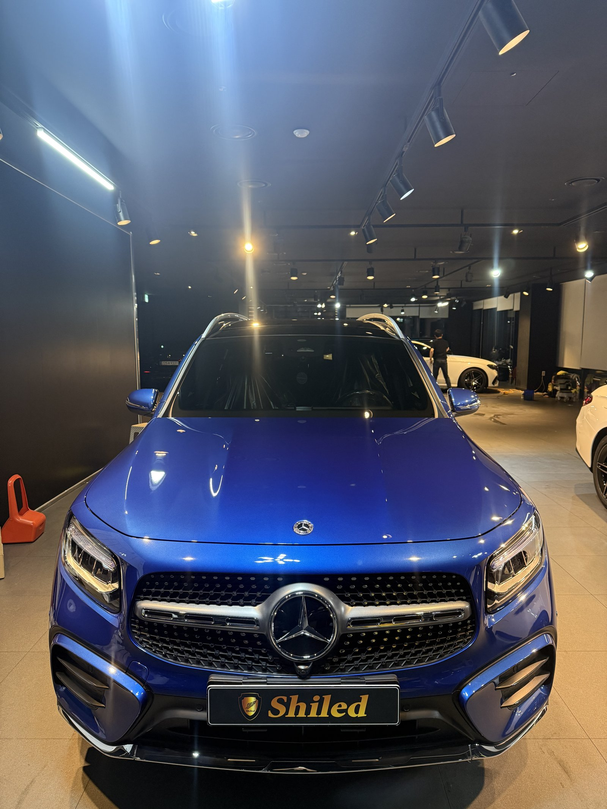
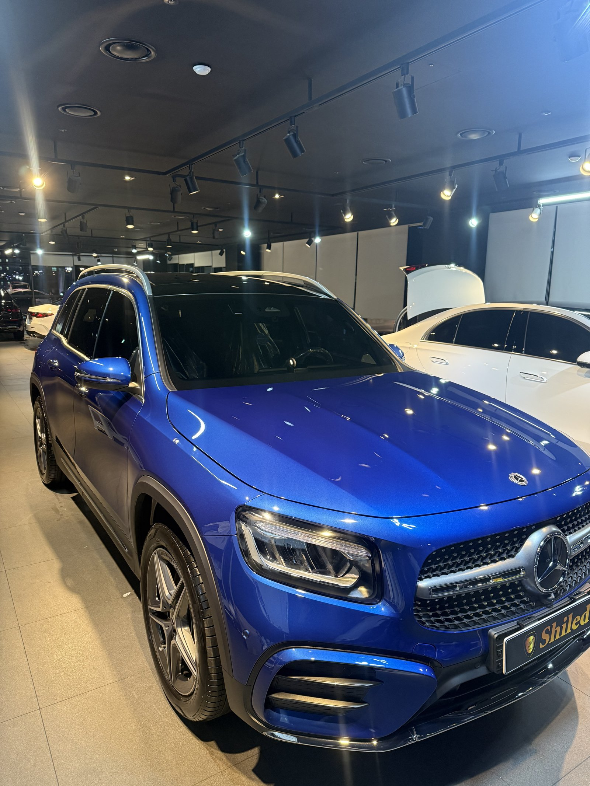
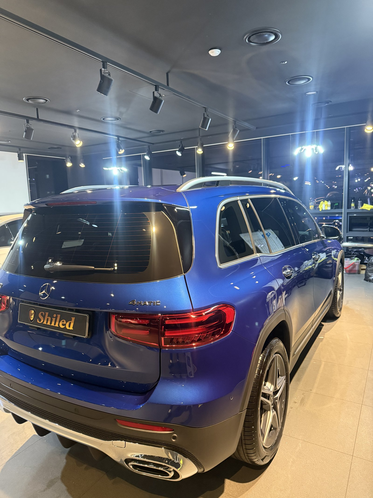
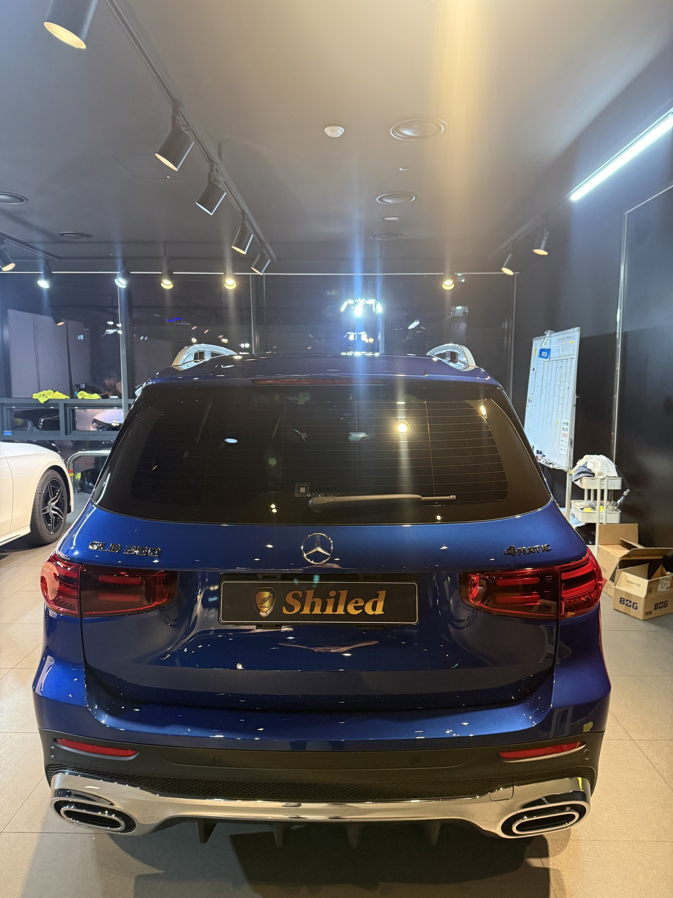
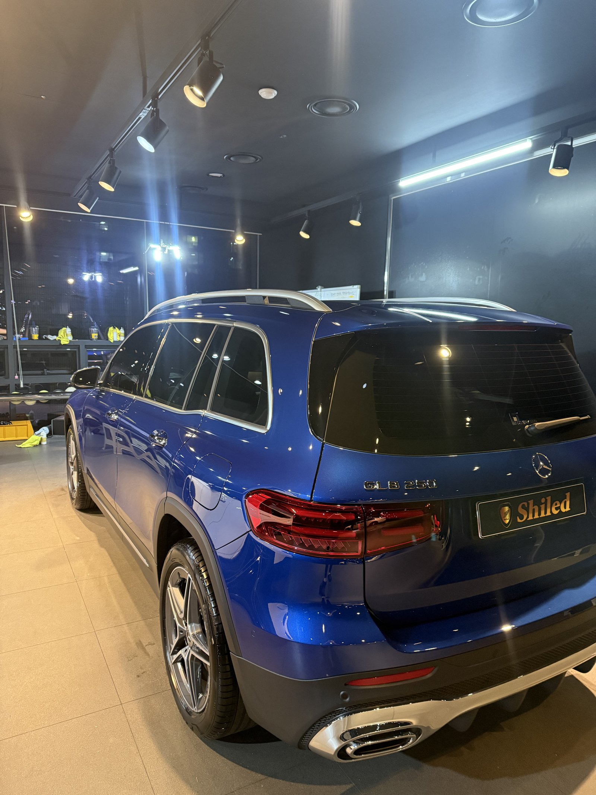
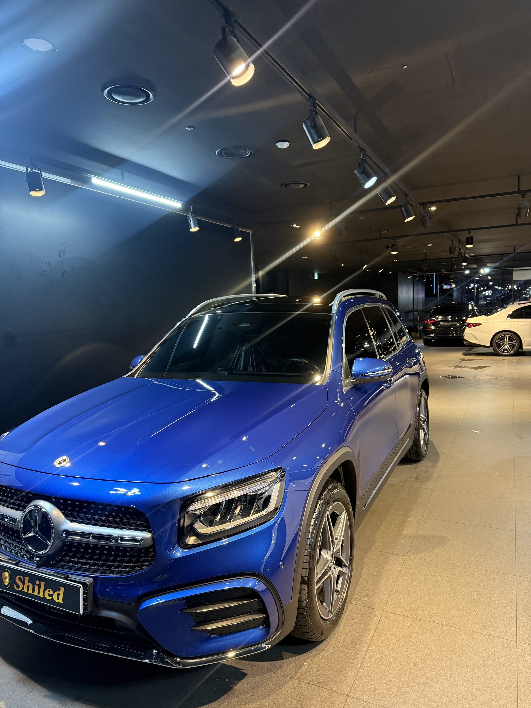
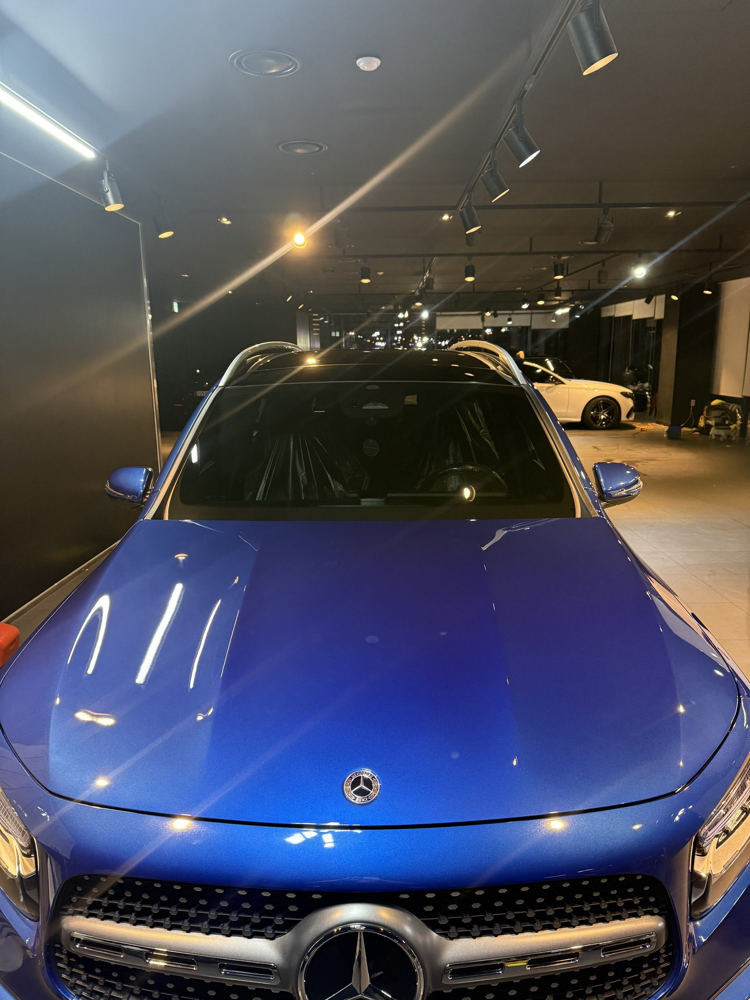
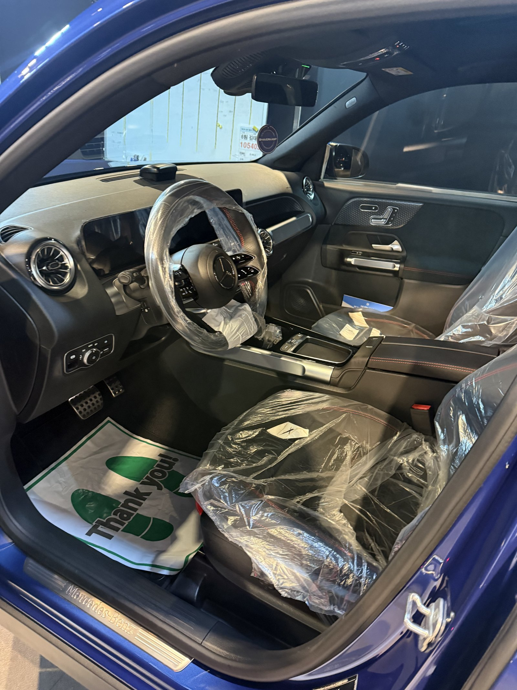
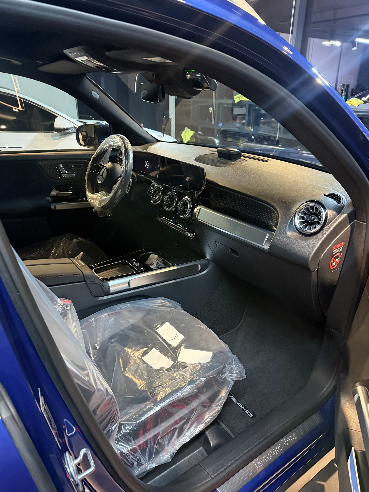
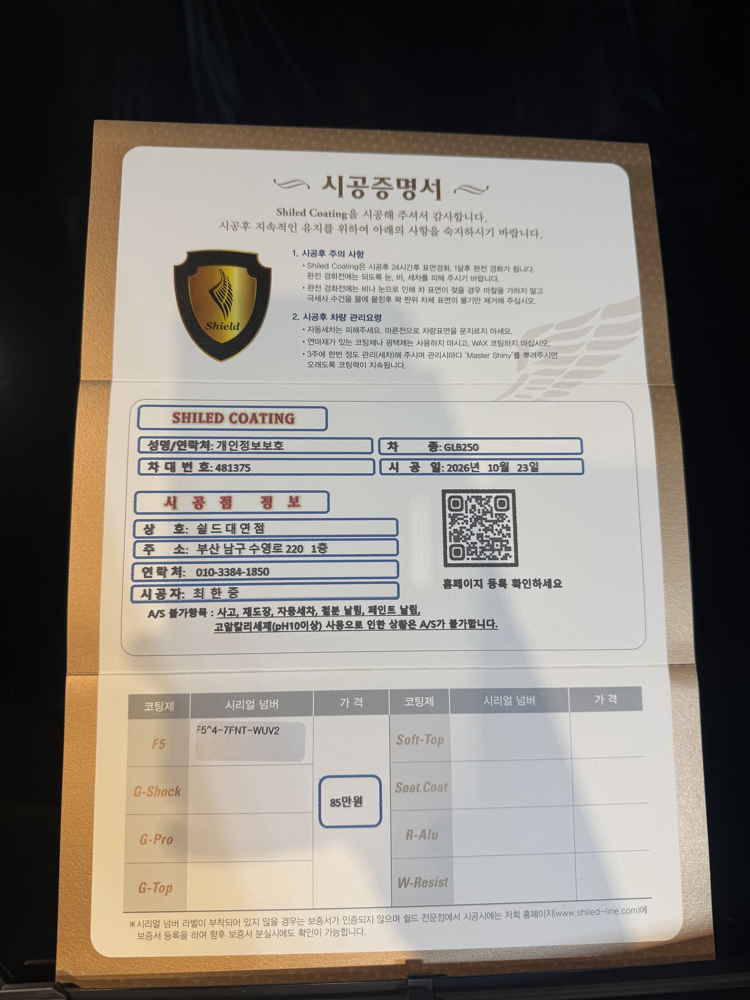

벤츠 GLB250, 블루 신차입니다.
밤 매장 조명 아래에서 마무리한 한 대입니다.
출고 전 F5로 진행한 부산 유리막코팅 기록입니다.

블루는 조명 아래에서 무엇을 보나요?
빛이 닿는 자리와 그늘진 자리의 색 차이를 봅니다.
블루는 조명에 따라 밝은 파랑과 남색 사이를 오갑니다.
코팅제가 남은 자리는 그 변화가 탁하게 끊깁니다.
보닛과 앞 펜더, 도어 아래 캐릭터 라인을 따라 확인했습니다.



루프 레일과 테일게이트 주변은요?
GLB는 박스형 차체에 루프 레일이 올라갑니다.
레일 받침과 뒷유리 위 스포일러 둘레는 걸레가 잘 안 들어갑니다.
테일게이트 아래 크롬 장식과 범퍼 경계도 따로 닦아냈습니다.



기술자의 팁
SUV는 루프와 테일게이트 윗부분이 높아 세차할 때 타월을 세게 밀게 됩니다. 발판을 쓰거나 손잡이가 긴 도구로 힘을 빼고 닦아 주십시오.
GLB250 블루에 F5를 올린 이유
F5는 색감의 깊이와 글로시함에 특화된 코팅입니다.
채도가 있는 블루는 F5의 장점이 잘 보이는 색입니다.
코팅제는 대표가 직접 개발·제조한 제품입니다.
이번 부산 유리막코팅은 F5 싱글로 진행했습니다.


시공증명서도 함께 드립니다
모든 시공 차량에 시공증명서를 드립니다.
차종·시공일·코팅제 시리얼 번호가 적혀 있고, 홈페이지에 등록해 보증을 받으실 수 있습니다.

차종·시공일·코팅제 시리얼이 기재된 시공증명서
자주 묻는 질문
Q. 블루 차량에 F5를 고른 이유는 무엇인가요?
A. F5는 색감 깊이와 글로시함에 특화된 코팅입니다. 블루처럼 채도가 있는 색은 조명 아래 색이 더 짙고 선명해 보입니다.
Q. GLB는 박스형 SUV라 신경 쓸 부분이 있나요?
A. 루프 레일과 뒷유리 위 스포일러, 테일게이트 아래쪽은 손이 덜 가는 자리입니다. 이 부분을 따로 닦아냅니다.
Q. 코팅 후 세차는 언제부터 하나요?
A. 코팅이 자리 잡을 시간이 필요해 시공 후 며칠은 세차를 피하시는 것이 좋습니다. 구체적인 시점은 출고 때 안내해 드립니다.
Q. 왜 출고 전에 코팅하나요?
A. 도장면이 가장 깨끗할 때 올린 코팅이 가장 오래갑니다. 운행과 세차로 잔기스가 생기기 전에 입혀두는 것이 핵심입니다.
Q. 쉴드광택 위치와 예약은 어떻게 하나요?
A. 부산 남구 유엔로220 1F 쉴드광택입니다. 예약·상담은 010-3384-1850, 대표 최한중이 직접 상담하고 책임 시공합니다.
새 차일수록 시작점이 다릅니다. 가장 깨끗할 때 입혀두십시오.
제품을 직접 만드는 사람이 직접 시공합니다.
부산에서 신차 유리막코팅을 고민 중이시면 편하게 연락 주십시오.
어떤 차를 타냐보다 어떻게 타냐가 중요합니다~!
시공 중에는 전화를 받지 못할 때가 많습니다.
카카오톡으로 차종과 원하시는 시공을 남겨주시면 확인 후 답변드립니다.
쉴드광택 · 부산 남구 유엔로220 1F · 대표 최한중